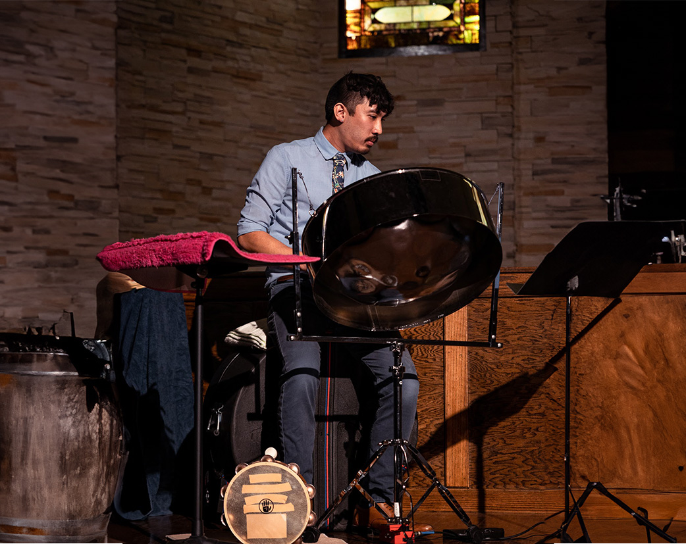

Calendar
Explore Bensen's calendar to see his upcoming performances and a recap of his past repertoire. Get a sense of his musical journey, from what he's performed before to what's coming next.

2023
Past performances
| 01.22 | Philadelphia Freedom Band | |
|
Additional details for Philadelphia Freedom Band go here. |
||
| 03.03
03.04 |
University of Delaware - Concerto Debut of Prism Rhapsody by Keiko Abe | |
| 03.25 | Solo with the U.S. Army Field Band - Prism Rhapsody by Keiko Abe | |
| 04.22 | University of Delaware Percussion Ensemble Concert - World premiere of David Gordon's The (Mis)Remembered Geography of My Percussive Motherland | |
| 04.23 | World Percussion and Steel Bands Concert | |
| 04.29 | Zachary Odom Graduate Recital - piano acc. | |
| 05.05
05.06 |
University of Delaware State of the Arts Festival - Gallery Exhibitor for Black Gold | |
| 05.05 | University of Delaware Symphony Orchestra Concert - Rachmaninoff 2 | |
| 05.06 | Natalie DiTomasso Senior Recital - assistant perc. | |
| 05.08 | University of Delaware Duos Concert | |
| 05.09 | Graduate Percussion Group Concert | |
2022
| 12.24 | Holy Comforter Lutheran Church - Christmas Eve Service | |
| 12.17 | Houston Choral Society - Christmas Concert, John Rutter's Gloria | |
| 12.08 | Melody Program - Outreach performances | |
| 12.07 | University of Delaware Symphony Orchestra Concert - world premiere, Lina Tonia's Mare Nubium | |
| 12.07 | University of Delaware Concerto Competition - Winner! | |
| 12.04 | Graduate Percussion Group Concert | |
| 11.15 | World Percussion Concert - steel pan and Brazilian percussion | |
| 11.11 | Percussive Arts Society International Convention - Chamber Music Competition - Second Place! | |
| 11.06 | University of Delaware Percussion Ensemble Concert - percussion and conductor | |
| 10.29 | Gore Hall Recruitment Event - Beginning Steel Band | |
| 10.25
10.26 10.27 |
Graduate Percussion Group - High School Tours | |
| 10.23 | Newark Symphony Orchestra Concert - The National Anthem and Elgar's Enigma Variations | |
| 10.13 | University of Delaware Symphony Orchestra Concert - Scheherazade | |
| 10.08 | Gore Hall Recruitment Event - Advanced Steel Band | |
| 09.17 | Freeman Pavilion Performance - participated in the Graduate Percussion Group, Wind Ensemble, and Orchestra | |
| 07.24
07.25 07.30 |
Michael Gordon's Field of Vision - world premiers at Caramoor, PS21, and MASS MoCA | |
| 07.10-
07.23 |
Sō Percussion Summer Institute - intern and performer | |
| 06.04 | Frances Walton Competition - Second place! | |
| 05.31 | Crawfish Boil - lead pan with Pan-demic Trio | |
| 05.27 | Wedding - lead pan with Pan-demic Trio | |
| 05.23 | Catharsis: Bensen Kwan's Send-Off Recital along with Krista Renée Pape and Mitchell Wright | |
| 05.15 | Kwan Studio Recital - students of Bensen Kwan performed at The Garza Studios | |
| 05.14 | Creekside Intermediate Solo Contest - piano acc | |
| 05.07 | Texas Medical Center Orchestra - section perc. | |
| 05.01 | Texas A&M Methodist Church Service - section perc. | |
| 04.11
04.12 |
FBISD Choir UIL - perc. acc. | |
| 04.06 | Ridgepoint HS Choir Concert - perc. acc. | |
| 03.23
03.24 |
FBISD Choir Pre-UIL - perc. acc. | |
| 03.06 | Texas Medical Center Orchestra - section perc. | |
| 02.16 | Ridgepoint HS Choir Concert - perc. acc. | |
| 02.08 | Westbrook Intermediate Solo Recital - piano acc. | |
| 01.15 | Accordion Orchestra - drumset and perc. for Stas Venglevski |
2021
| 12.18 | Texas Chamber Symphony - section perc. | |
| 12.11 | Houston Choral Society - section perc. | |
| 12.09 | Ronald Thornton MS Winter Choir Concert - piano acc. | |
| 12.02 | Sugar Land Winds Winter Concert - section perc. | |
| 11.13-
11.21 |
Bigger and Brighter Pride Bands Conference - section perc. | |
| 10.30 | FBISD Solo and Ensemble - piano acc. | |
| 10.14 | Ronald Thornton MS Choir Concert - piano acc. | |
| 6.21 | Make Music Day - organized and lead public performance of Flowerpot Music by Elliot Cole | |
| 5.14 | Moores in the City public performance - lead pan with Pan-demic Trio | |
| 4.29 | San Jacinto Community College Wind Ensemble - section perc. | |
| 2.27 | Creekside Intermediate Solo Recital - piano acc. | |
| 2.09 | Westbrook Intermediate Solo Recital - piano acc. | |
| 1.31 | Alvin Lutheran Church Service - pianist |
2020
| Philadelphia International Music Festival - Overall Winner of virtual concerto competition |
2019
| Junge Norddeutshche Philharmonie - Played Straivnsky's Petrouchka and Joe Snape's #etruschka in the Elbphilharmonie | ||
| Leipzig Philharmonie - Recorded film music to Latte Igel and the Magic Waterstone | ||
| Solo Recital - Performed Darian Thomas/ Kid Gunner Brother, a piece commenting on gun violence, school safety, and black oppression. |
2018
| Mika Hasler Young Artists' Competition - Gold medalist and performed a solo recital at Rice University alongside Yukino Miyake, Arthur Gilligan, Jordan Avila, and Roland Hernandez | ||
| So Percussion Summer Institute - performed Nagoya Marimbas for Steve Reich in masterclass and premiered several works | ||
| Theodor Milkov Marimba Academy - studied new marimba technique under Theodor Milkov along with Arjan Jongsma, and Anders Kann Elten | ||
| Hot Springs Music Festival - performed many works including Bernstein and Mahler |
2017
| Moores School Concerto Competition - finalist performing Keiko Abe's Prism Rhapsody with Xueer Chen as piano accompanist | ||
| PRISMA Music Festival - performed many works including Strauss, Tchaikovsky, and Rachmaninoff |
Get in touch
To contact Bensen, please click here for a direct email or fill out the form below.